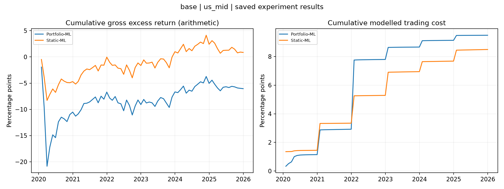

Original Static ML and default Portfolio ML only.
Status: available
Existing Keats outputs restored and organised only. No missing experiment was run. Keats test returns are 2020-2025; no separate unseen 2021-2025 holdout is claimed. Reference/preparatory statistics are not a completed iteration result.
Returns and costs are annual decimal fractions; leverage and turnover are ratios.
| strategy | role | months | first_return | last_return | annual_gross_return | annual_cost | annual_net_return | annual_gross_volatility | net_sharpe_paper | mean_leverage | mean_monthly_turnover |
|---|---|---|---|---|---|---|---|---|---|---|---|
| Static-ML | experiment | 72 | 2020-01-31 | 2025-12-31 | 0.0014346 | 0.014149 | -0.012714 | 0.037927 | -0.33523 | 0.24818 | 0.021928 |
| Portfolio-ML | experiment | 72 | 2020-01-31 | 2025-12-31 | -0.010085 | 0.015808 | -0.025893 | 0.067163 | -0.38553 | 0.25269 | 0.025186 |
